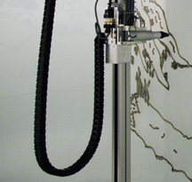
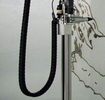
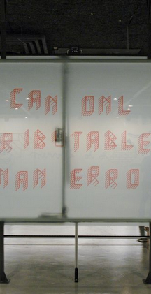

RITA
Jürg Lehni, 2005
Rita is a recording and playback device for drawings, capable of displaying constantly changing content by reproducing line drawings and erasing them again.
The installation was originally conceived to extend the architecture of an existing building, by drawing directly onto a window that faces the outside, communicating to passersby and luring them in.
Rita allows the instrumentalization of the drawing and the play with its narrative qualities by controlling the sequence and dynamics of the drawing process. Its flexible tool-head can change between four whiteboard markers and two sponges of different sizes.
Erasing was made an active component of the process, adding the possibility to change already drawn lines, as well as to clear the entire surface for the next drawing. Rita continuously reproduces without ever producing anything, as its results are not there to stay.
The focus is instead on the moment of the creation and the simulation of the dynamics and expression of drawings, rather than their finished form. The tension between a personal drawing and its automated reproduction and simulation by a machine holds ambiguous and poetic qualities.
Rita was developed with Defekt for the exhibition Rita + Hektor at Tensta Konsthall in Stockholm, with support by Sitemapping.ch, Festo SE and Pro Helvetia.
 

"Girl with Fish on a Leaf"
Emma Åkerman, Rita + Hektor, Tensta Konsthall, Stockholm, 2005

"It Can Only be Attributable to Human Error"
Guy Meldem, Rita + Hektor, Tensta Konsthall, Stockholm, 2005
"Die überraschende Verschiebung der Sollbruchstelle eines in optimalen Verhältnissen ausgewachsenen Astes"
Yves Netzhammer, Rita + Hektor, Tensta Konsthall, Stockholm, 2003